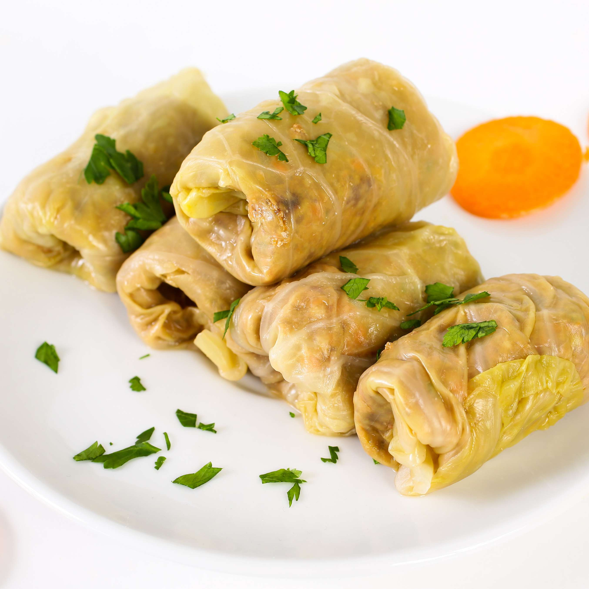

Sarmale

This amazing traditional Romanian dish is sure to satisfy your hunger. Try
this delicious and easy to make recipe written below!
Sarma is a stuffed dish in Southeastern European and Ottoman cuisine made
of cabbage leaves rolled around a filling of minnced meat. This dish part
of a broader category of stuffed dishes known as dolma. "Sarma" is a
Turkish word meaning "wraped".
The Rmanian way to make this dish is to make it with sour cabbage. Also,
romanians add smoked meat and serve the dish alongside chilli peppers and
some sour cream to ballance the spiciness. Follow our recipe below to
learn how to make this delicious dish yourself!
Ingredients:
-
Vegetable oil – We’ll be using this to saute the onion and rice.
You can use any type of oil that you have handy.
-
Onion – I used a large onion because this recipe makes a lot of
cabbage rolls. Every bite should have onion in it!
-
Long grain rice – Basmati rice is best. I wouldn’t use brown
rice- it takes a lot longer to cook than white rice and you may end up
with crunchy bits in your rolls.
-
Ground pork – I love to use pork because it has a higher fat
content and makes for some nice juicy rolls. You can use any type of
ground meat you like, but keep in mind that leaner meats like chicken or
turkey will come out drier.
-
Fresh parsley & dill – Using fresh herbs makes such a big
difference in how the flavor develops in your rolls!
- Salt & pepper – Season the mixture to your own discretion.
-
Sour cabbage leaves – This is what really sets the Romanian
version apart from the rest. The little hit of vinegar is to die for!
-
Bacon – Find yourself a nice thick-cut smoky style of bacon.
-
Tomato juice – This is what our rolls are going to sit and cook
in.
Steps:
-
Prepare the filling: Heat the oil in a skillet over medium-high.
Saute the onions until translucent, then add the rice and toast for 1
minute. Add the pork, salt, pepper, parsley, dill, and the onion mixture
to a large bowl and mix well. Use salt sparingly – the cabbage leaves
are brined.
-
Roll the filling: Remove the cabbage leaves from the brine. You
can soak them in water beforehand to draw out some of the salt. Cut each
leaf in half and fill the piece with a few tbsp of the meat mixture and
roll. Refer to the video in the recipe card to see how I roll these nice
and tight. Repeat until all the filling has been used.
-
Assemble the rolls: Chop up the remaining cabbage leaves and add
them to a large pot or deep roasting dish with a lid. Arrange all the
rolls over the chopped cabbage and disperse the bacon evenly among the
rolls. Pour the tomato juice over the rolls and top up with some water,
if needed, to ensure the rolls are covered with liquid.
-
Bake the rolls: Cover the pot with a lid or foil. Bake at 375F
for 2 hours, then remove the cover and cook for another 1 1/2 – 2 hours.
Serve hot with a side of sour cream.